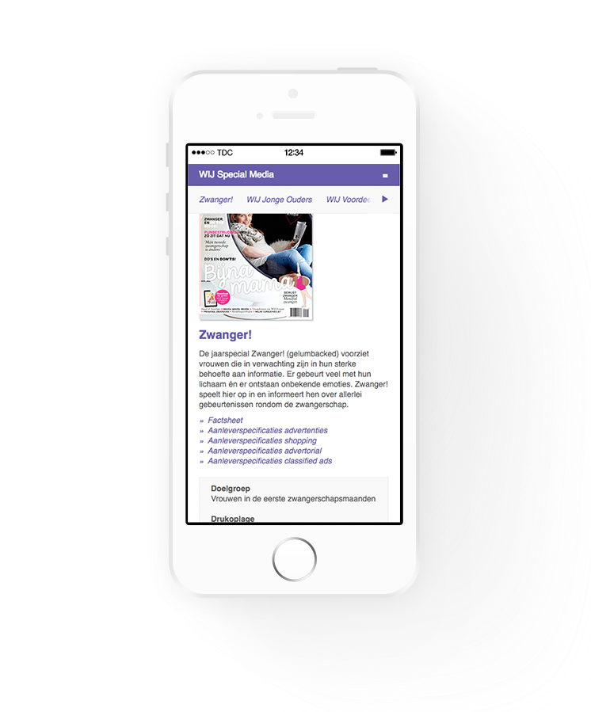

draait inmiddels goed en heeft rond de 100.000 unieke bezoekers per maand. Verschillende thema aanpassingen liggen in het verschiet door de nieuwe inzichten, zo moet gerelateerde content beter tot z'n recht komen tijdens het lezen van een artikel.
draait inmiddels goed en heeft rond de 100.000 unieke bezoekers per maand. Verschillende thema aanpassingen liggen in het verschiet door de nieuwe inzichten, zo moet gerelateerde content beter tot z'n recht komen tijdens het lezen van een artikel.Binnen 1 maand moest er een nieuw blog platform worden gestart met de naam WIJ a la Mama. De redactie had inmiddels een contentplan geschreven en was druk bezig met het regelen van bloggers. Aan mij is gevraagd welke techniek kon worden gebruikt om binnen deze deadline te starten.
Gezien de beperkte ontwikkeltijd viel de keuze snel op wordpress. Veel gebruikt en het grote aantal plugins geeft de mogelijkheid om snel opties toe te voegen. Na het instellen van de server door de systeem administratie kon development beginnen.
Door de redactie te laten experimenteren met verschillende thema’s werd snel de juiste look en feel bepaald. Wel moest het uiteindelijke thema worden omgebouwd om aan alle wensen te voldoen. Ook heeft wordpress een beperkte gebruikersrechten administratie, waardoor veel van het CMS zichtbaar is voor niet admin’s. Door verschillende plugins kon dit echter op tijd verholpen worden.
Wijalamama.nl draait inmiddels goed en heeft rond de 100.000 unieke bezoekers per maand. Verschillende thema aanpassingen liggen in het verschiet door de nieuwe inzichten, zo moet gerelateerde content beter tot z'n recht komen tijdens het lezen van een artikel.
De website wijspecialmedia.nl was al jaren niet geupdatet en moest nieuwe content en een nieuw uiterlijk krijgen. De site moest ook goed geschikt zijn voor mobiele apparaten, ondanks de vele onderwerpen.
Na een paar prototypes te hebben geprobeerd was de beste oplossing om een schuif submenu te bouwen. Op deze manier kunnen alle items op de pagina snel worden bereikt zonder eindeloos te scrollen.
Gezien de zakelijke insteek van de site is het van belang om snel bepaalde producten te kunnen vinden. Ook moest het mogelijk zijn naar een specifieke producten te linken op de pagina bijvoorbeeld: wijspecialmedia.nl/print
